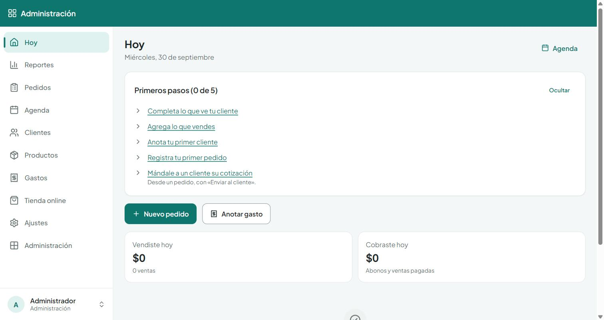
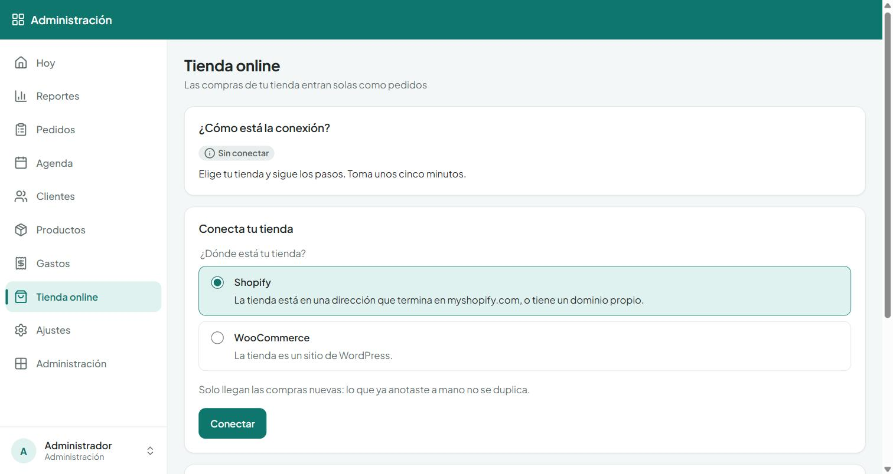
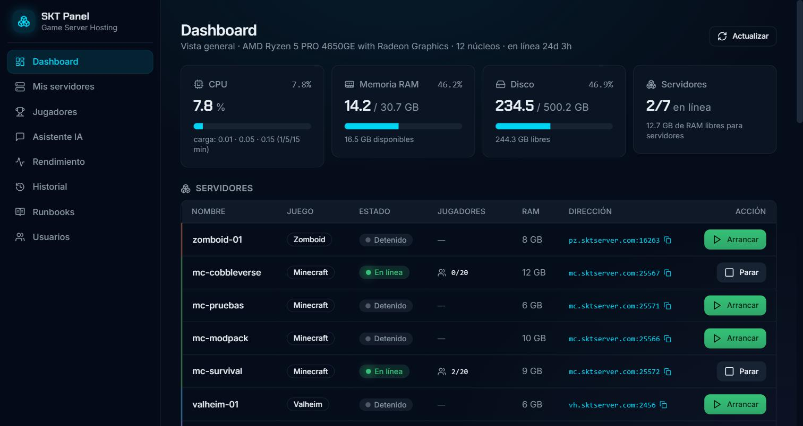

Vangelis Ramos Ríos.
contactovange02@gmail.com · linkedin.com/in/vangelis-ramos · github.com/Vangeum · vangeum.github.io/Portafolio · Santiago, Chile
Ingeniero en Computación
e Informática · Software,
automatización e IA local
- /in/vangelis-ramos
- GitHub
- github.com/Vangeum
Proyectos.
Tres sistemas completos y funcionando: un chatbot de soporte con IA 100 % local, un CRM en producción que atiende a varios negocios y la plataforma con la que administro mis propios servidores.
Proyecto 01 — Tesis de título · MVP
Agente de soportecon IA local.
Un chatbot de soporte que responde las consultas frecuentes con RAG, 100 % en infraestructura propia: los datos no salen de los servidores de la empresa. Cuando no puede resolver algo, escala a una persona, que puede pausar el bot y responder desde el panel.
- Arquitectura
- RAG orquestado con n8n
- Modelos
- Abiertos, servidos con Ollama en GPU propia
- Stack
- PostgreSQL + pgvector · Caddy · Docker
- Lenguajes
- JavaScript, Python y PHP
Consultas que se repiten
Las preguntas frecuentes de los clientes ocupan al equipo de soporte y alargan los tiempos de respuesta.
Un agente que responde
Búsqueda híbrida (vectores y texto) con re-ranking sobre PostgreSQL y pgvector, y un caché semántico para responder al instante lo que ya se preguntó.
Medible y supervisado
Detecta cuándo escalar a una persona, muestra métricas y conversaciones en un panel, y un set de evaluación mide la precisión y la latencia de cada modelo.
Proyecto 02 — Proyecto personal · en producción
CRMmodular.
Nació como un CRM a medida para un negocio de sublimación y hoy es una plataforma de gestión para microemprendimientos: una sola instalación atiende a varios negocios, cada uno con sus datos aislados. Se usa sobre todo desde el celular, instalada como app.
- Backend
- Express + TypeScript · SQLite
- Frontend
- React 19 + Vite · app instalable (PWA)
- Integraciones
- Shopify y WooCommerce por webhooks firmados
- Calidad
- Pruebas E2E con auditoría de accesibilidad
Se adapta a cada negocio
Un asistente inicial pregunta cómo funciona el negocio y activa solo lo que aplica. Los módulos se prenden y apagan después sin perder datos.
Datos aislados por cuenta
Varios negocios comparten la instalación sin ver datos ajenos, y una prueba automática recorre la API con dos cuentas para verificarlo.
Shopify o WooCommerce
Las compras entran solas como pedidos por webhooks firmados. El CRM no guarda llaves de la tienda y reconoce cada producto por su SKU.


Proyecto 03 — Homelab propio · en producción
SKTPanel.
La plataforma con la que administro servidores de juegos en dos mini PC en casa. Cada servidor corre en su propio contenedor y se enciende, apaga, respalda y monitorea desde un panel web protegido con Cloudflare Access.
- Infraestructura
- 2 mini PC · Docker
- Red
- Túnel frp hacia un VPS · dominios por juego
- Acceso
- Cloudflare Access (Zero Trust)
- Juegos
- Minecraft, Valheim, Terraria y Project Zomboid
Un servidor, un contenedor
Cada servidor de juego vive en su propio contenedor Docker, con RAM asignada, soporte para mods y consola por RCON desde el panel.
Respaldos y ahorro
Respaldos cada hora con restauración desde el panel, y un agente en Python que apaga los servidores tras 45 minutos sin jugadores.
Runbooks y resumen diario
Un asistente consulta los runbooks del proyecto ante incidencias y genera un resumen diario del estado del equipo con recomendaciones.

Experiencia.
Tres cargos en Grupo COMGRAP en menos de un año, de practicante a analista. Resuelvo incidencias reales todos los días, y eso define cómo diseño y automatizo.
-
jul 2026 — hoyAscenso
Analista de Servicios y Experiencia Digital
Grupo COMGRAP · Híbrido
Gestión de incidencias y soporte a usuarios, sumando conocimientos de infraestructura y procesamiento de datos para mejorar los servicios digitales.
-
abr — jul 2026Contratado tras la práctica
Asistente Técnico, Soporte TI
Grupo COMGRAP · Presencial
Soporte N1 y N2 de Autodesk, Adobe y Trimble. Gestión de licencias corporativas y una herramienta en Python para filtrarlas.
-
ene — abr 2026
Practicante Profesional, Soporte TI
Grupo COMGRAP · Presencial
Incidencias de hardware y software, y mantenimiento de equipos. La práctica terminó en contratación a jornada completa.
-
nov 2023 — ene 2024
Soporte TI
Family Shop · Jornada parcial
Equipos, puntos de venta y redes LAN/WiFi. Apoyo en la preparación tecnológica para abrir tres tiendas nuevas.
Qué puedohacer.
Cuatro áreas en las que aporto desde el primer día, cada una respaldada por experiencia o por un proyecto.
-
01
Software para negocios
Sistemas a medida con React, Express y TypeScript para gestionar clientes y ventas, integrados con Shopify o WooCommerce por webhooks y desplegados con Docker.
↳ CRM modular -
02
IA en infraestructura propia
Chatbots con RAG (búsqueda híbrida y re-ranking) orquestados con n8n y modelos abiertos servidos con Ollama, sin enviar datos a servicios externos.
↳ Agente de soporte con IA -
03
Automatización con Python
Herramientas que eliminan trabajo manual y ordenan la información.
↳ Filtro de licencias -
04
La base: soporte e infraestructura TI
Resuelvo incidencias de hardware, software y redes todos los días, y administro mi propia infraestructura: contenedores, túneles, respaldos y monitoreo.
↳ SKT Panel · COMGRAP
- Python
- TypeScript y JavaScript (React, Express)
- PHP
- SQL: PostgreSQL, pgvector y SQLite
- Java, C y C++
- IA generativa y RAG
- Docker y Docker Compose
- Ollama y n8n
- Caddy, frp y Cloudflare Access
- Shopify y WooCommerce (webhooks)
- Git y GitHub
- Autodesk, Adobe y Trimble
- Soporte N1 y N2
- Gestión de incidencias
- Licenciamiento de software
- Redes LAN/WiFi y hardware
- Documentación técnica
Formación.
Ingeniero en Computación e Informática
Universidad Andrés Bello. Título profesional. Desarrollo de software, algoritmos, bases de datos y sistemas.
Enseñanza Media Científico-Humanista
Liceo Nacional de Maipú. Electivo en Física.
- IBM · jun 2025
Machine Learning for Data Science Projects
Verificar → Machine Learning for Data Science Projects (abre en una pestaña nueva) - IBM · Coursera · jun 2025
Building Generative AI-Powered Applications with Python
Verificar → Building Generative AI-Powered Applications with Python (abre en una pestaña nueva) - Coursera · abr 2025
Generative AI Essentials
Verificar → Generative AI Essentials (abre en una pestaña nueva) - Autodesk · jun 2026
Level UP Essentials Entry
Verificar → Level UP Essentials Entry (abre en una pestaña nueva)
IA Generativa: eleve su carrera en el desarrollo de softwareIBM · Coursera · jun 2025
Verificar → IA Generativa: eleve su carrera en el desarrollo de software (abre en una pestaña nueva)Guía profesional para desarrolladores de software y preparación de entrevistasIBM · Coursera · jun 2025
Verificar → Guía profesional para desarrolladores de software (abre en una pestaña nueva)IA Generativa: Conceptos básicos de ingeniería de instruccionesIBM · Coursera · abr 2025
Verificar → IA Generativa: Conceptos básicos de ingeniería de instrucciones (abre en una pestaña nueva)IA Generativa: Introducción y AplicacionesIBM · Coursera · abr 2025
Verificar → IA Generativa: Introducción y Aplicaciones (abre en una pestaña nueva)Introducción a la inteligencia artificial (IA)IBM · Coursera · abr 2025
Verificar → Introducción a la inteligencia artificial (abre en una pestaña nueva)Introducción a la ingeniería de softwareIBM · Coursera · mar 2025
Verificar → Introducción a la ingeniería de software (abre en una pestaña nueva)Big Data: el impacto de los datos masivos en la sociedad actualUniversidad Autónoma de Barcelona · Coursera
Verificar → Big Data (abre en una pestaña nueva)
Conversemos.
¿Necesitas un sistema para tu negocio, automatizar un proceso o soporte TI? Escríbeme.
contactovange02@gmail.com